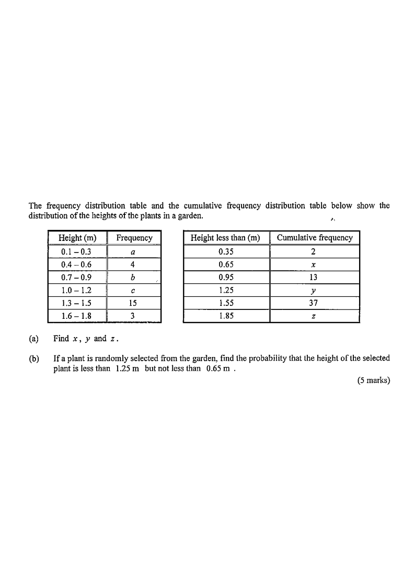

Cumulative Frequency Polygon & Table Visualiser
Scroll the solution on the right — the figure updates step by step.
The frequency distribution table and the cumulative frequency distribution table below show the distribution of the heights of the plants in a garden.
| Height (m) | Frequency |
|---|---|
| 0.1 – 0.3 | $a$ |
| 0.4 – 0.6 | 4 |
| 0.7 – 0.9 | $b$ |
| 1.0 – 1.2 | $c$ |
| 1.3 – 1.5 | 15 |
| 1.6 – 1.8 | 3 |
| Height less than (m) | Cumulative freq. |
|---|---|
| 0.35 | 2 |
| 0.65 | $x$ |
| 0.95 | 13 |
| 1.25 | $y$ |
| 1.55 | 37 |
| 1.85 | $z$ |
(a) Find $x$, $y$ and $z$.
(b) If a plant is randomly selected from the garden, find the probability that the height of the selected plant is less than $1.25$ m but not less than $0.65$ m.

The cumulative frequencies are cumulative at each upper class boundary. Compare the boundaries with the class intervals:
$0.35 = 0.3 + 0.05$, $0.65 = 0.6+0.05$, $0.95=0.9+0.05$, $1.25=1.2+0.05$, $1.55=1.5+0.05$, $1.85=1.8+0.05$.
So each entry in the lower table corresponds to “up to the end of that class”.
$x$ = total frequency of the classes $0.1-0.3$ and $0.4-0.6$:
$$x = a + 4 = 2 + 4 = 6$$
The figure $37$ is the cumulative frequency below $1.55$ m, which includes the class $1.3-1.5$ of frequency $15$:
$$y = 37 - 15 = 22$$
$z$ is the cumulative frequency at the final boundary $1.85$ m — i.e. the total:
$$z = 37 + 3 = 40$$
“Less than $1.25$ m” counts $y = 22$ plants.
“Not less than $0.65$ m” means we exclude the plants shorter than $0.65$ m, i.e. exclude $x = 6$ plants.
Required number $= y - x = 22 - 6 = 16$.
$$\text{Required probability} = \frac{y-x}{z} = \frac{22-6}{40} = \frac{16}{40} = \frac{2}{5}$$
Question. The table shows the cumulative frequency of the masses of \\(30\\) parcels: below \\(2\\) kg, \\(4\\) parcels; below \\(4\\) kg, \\(11\\); below \\(6\\) kg, \\(20\\); below \\(8\\) kg, \\(27\\); below \\(10\\) kg, \\(30\\).
(a) Find the frequency of the class \\(2\\) kg \u2013 \\(4\\) kg.
(b) Find the number of parcels with mass at least \\(4\\) kg but below \\(8\\) kg.
(c) A parcel is chosen at random. Find the probability that its mass is below \\(6\\) kg.